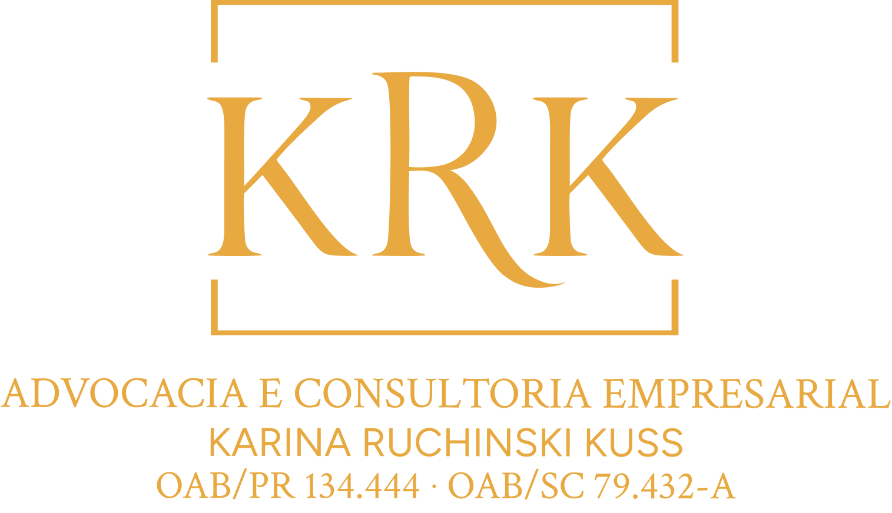

Gestão do passivo tributário
Levantamento dos débitos, organização das pendências e definição de prioridades para regularização.

Direito tributário e empresarial
A KRK atua na análise, negociação e reestruturação de passivos tributários e bancários, na recuperação de créditos tributários e na estruturação jurídica de projetos empresariais voltados à expansão.
Atendimento empresarial personalizado · PR e SC · On-line em todo o Brasil
Diagnóstico empresarial
Débitos tributários e bancários podem afetar o fluxo de caixa, restringir o acesso ao crédito, gerar bloqueios judiciais e comprometer a continuidade das atividades.
Sem análise estratégica, a empresa pode assumir parcelamentos incompatíveis, perder oportunidades de negociação ou continuar pagando sem compreender a composição da dívida.
Ao mesmo tempo, podem existir créditos tributários não aproveitados, incentivos fiscais ou alternativas de investimento capazes de contribuir para sua recuperação e expansão.
Sua empresa pode possuir não apenas obrigações a reorganizar, mas também créditos, incentivos e oportunidades para avançar.
Soluções
Uma abordagem integrada para compreender o passivo, identificar oportunidades e estruturar decisões.
Levantamento dos débitos, organização das pendências e definição de prioridades para regularização.
Análise da origem, composição e exigibilidade, com verificação de inconsistências e possibilidades de revisão.
Identificação de recolhimentos indevidos ou superiores ao devido e avaliação dos caminhos para reconhecimento e aproveitamento.
Análise da possibilidade de utilizar créditos reconhecidos para compensar tributos ou abater débitos em aberto.
Avaliação da classificação da PGFN e preparação do pedido com suporte contábil, financeiro e operacional.
Estratégias de negociação que consideram entrada, prazo, garantias e capacidade efetiva de pagamento.
Defesa, análise de bloqueios e garantias, recursos e mandados de segurança quando cabíveis.
Análise de contratos e propostas, negociação e defesa judicial conforme as particularidades do caso.
Expansão empresarial
A KRK estrutura juridicamente projetos de implantação, ampliação e modernização, organizando informações, instrumentos e riscos para apresentação a fundos de investimento e análise de programas de incentivo.
Organização jurídica e tributária do projeto, análise das garantias e apoio na formalização da operação.
Identificação de programas, avaliação do enquadramento e acompanhamento dos requerimentos.
Estrutura mais segura para expansão e prevenção de novos passivos.
Como atuamos
Compreensão dos débitos, créditos potenciais, projetos e necessidades da empresa.
Análise de documentos fiscais, contábeis, financeiros, contratuais e processuais.
Apresentação das alternativas, riscos, limitações e medidas recomendadas.
Condução das providências administrativas, negociais e judiciais contratadas.
Orientação sobre exigências, decisões e próximos passos em cada etapa.
Sobre o escritório
A KRK Advocacia e Consultoria Empresarial atua especialmente na gestão de passivos tributários e bancários, recuperação de créditos, contencioso empresarial e estruturação de projetos de expansão.
A atuação é pautada pela análise individualizada, clareza na comunicação e construção de estratégias juridicamente seguras, financeiramente viáveis e alinhadas aos objetivos empresariais.
Dúvidas frequentes
Não. Cada situação depende da natureza dos débitos, da documentação, da legislação aplicável e das condições disponibilizadas. A análise identifica as alternativas juridicamente possíveis.
Em determinadas situações, sim. A possibilidade depende da natureza do crédito e do débito, do período e dos procedimentos administrativos exigidos.
Não. As condições dependem da modalidade, da classificação dos débitos, da capacidade de pagamento e das regras vigentes.
A KRK estrutura juridicamente o projeto e prepara a empresa para apresentação. A aprovação e a liberação de recursos dependem da análise dos fundos ou demais agentes.
O enquadramento depende da atividade, localização, investimento, empregos, impacto econômico, contrapartidas e regras de cada programa.
Sim. Reuniões, análise documental e acompanhamento podem ser realizados de forma remota.
Contato
Converse com a KRK para identificar os principais riscos, oportunidades e documentos necessários para uma análise mais detalhada.
Atendimento inicial
O número de WhatsApp será adicionado após a aprovação do layout.
O envio de informações não formaliza automaticamente a contratação dos serviços jurídicos.